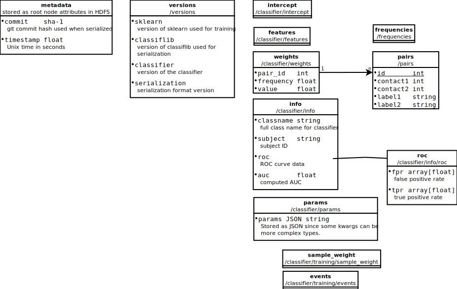

classiflib
Serialization format
{kind=link}
Workflow
Saving a classifier
Train a
LogisticRegressionclassifier fromsklearn.linear_modelCreate a
classiflib.ClassifierContainerto store the data required to recreate a trained classifier (this includes some extra metadata)Save the container as a zip file (see API docs for other formats)
Loading a classifier
Load with the
classiflib.ClassifierContainer.load()class method
This automatically sets the weights and intercept, so no additional steps are required if the classifier does not need to be retrained on newly excluded pairs.
Structured data types
Some data are stored with Numpy record arrays. The data types for these arrays
are defined in classiflib.dtypes:
- classiflib.dtypes.pairs = dtype([('contact0', '<i8'), ('contact1', '<i8'), ('label0', 'S256'), ('label1', 'S256')])
- classiflib.dtypes.weights = dtype([('pair_id', '<i8'), ('frequency', '<f8'), ('value', '<f8')])
- classiflib.dtypes.timing_window = dtype([('start_time', '<f8'), ('end_time', '<f8'), ('buffer', '<f8')])
Note
When adding pairs to a ClassifierContainer, an additional
id column is automatically added. This is used to reference the
bipolar pairs in the weights array.
Odin embedded mode
Odin embedded mode data types use the traitschema package for easier
serializability.
- class classiflib.dtypes.OdinEmbeddedMeta(**kwargs)[source]
OdinEmbeddedMeta info that can be stored in a schema bundle.
- num_channels
Number of embedded channels
- num_classifiers
Number of classifiers
- subject
Subject code
- timestamp
Time of creation
- class classiflib.dtypes.OdinEmbeddedClassifier(**kwargs)[source]
General classifier settings for Odin embedded mode.
- averaging_interval
Averaging interval in ms
- refractory_period
Refractory period in ms
- stim_channel_name
Stim channel name
- stim_duration
Stim duration in ms
- subject
Subject code
- threshold
Stim threshold
- waveform_name
Waveform name (should be of the form
<stim_channel_name>_wfm)
- weights
channels x 8)- Type:
Weights per channel per frequency (shape
- class classiflib.dtypes.OdinEmbeddedChannel(**kwargs)[source]
Odin embedded mode channel specifications.
- label
Sense channel label
- means
Mean values per frequency
- sigmas
Standard deviations per frequency
- subject
Subject code
Rather than using classiflib.ClassifierContainer, use
classiflib.OdinEmbeddedClassifierContainer:
- class classiflib.container.OdinEmbeddedClassifierContainer(channels, classifiers, timestamp=None)[source]
Container for Odin ENS embedded mode classifiers.
- Parameters:
channels (List[List[dtypes.OdinEmbeddedChannel]]) – Channel specifications. Each entry is a list of channels associated with each classifier (or just a list of channels for record-only mode). There must be 1-32 channels defined.
classifiers (List[dtypes.OdinEmbeddedClassifier]) – Classifier specifications. Must have 0 (record-only mode), 1, or 2.
timestamp (float or None) – Timestamp or None to use the current time.
- Raises:
IndexError – If number of channels or classifiers is not within allowed limits.
Utilities
Experiment defaults
For convenience, timing windows for some experiments are perdefined in
classiflib.defaults.
- class classiflib.defaults.FRDefaults[source]
Defaults used for the FR classifier.
- encoding_samples_weight = 2.5
- encoding_window = (0., 1.366, 1.365)
- filter_order = 4
- filter_width = 5
- freqs = array([ 6. , 9.75368156, 15.85571732, 25.77526961, 41.90062864, 68.11423148, 110.72742057, 180. ])
- hfs = array([ 71.12960612, 78.13879874, 85.8386852 , 94.29732727, 103.58949358, 113.79732058, 125.01103851, 137.329769 , 150.86240127, 165.72855457, 182.0596356 , 200. ])
- hfs_window = (0., 1.6, 1.)
- retrieval_window = (-0.525, 0., 0.524)
API reference
- class classiflib.container.ClassifierContainer(classifier, pairs, features, events=None, sample_weight=None, frequencies=array([6., 9.75368156, 15.85571732, 25.77526961, 41.90062864, 68.11423148, 110.72742057, 180.]), weights=None, intercept=None, classifier_info={'auc': None, 'classname': None, 'params': {}, 'roc': None, 'subject': 'undefined'}, versions=None, timestamp=None)[source]
Container carrying a classifier and associated data. This is used as the serializer-neutral object that is returned when deserializing and should not need to be instantiated directly. All parameters become attributes of the same name.
- Parameters:
classifier (BaseEstimator) – The classifier object
pairs (np.recarray) – Bipolar pairs used for training (dtype:
classiflib.dtypes.pairs)features (np.ndarray) – Features matrix
events (np.recarray) – Events associated with the features
sample_weight (np.ndarray) – Sample weights used during training
frequencies (np.ndarray) – Frequencies the classifier uses.
weights (np.recarray) – Weights (dtype:
classiflib.dtypes.weights).Noneif creating a container for serialization.intercept (float) – Intercept.
Noneif creating a container for serialization.classifier_info (dict) – A dict possibly containing the following keys: classname, subject, roc, auc, params (see the meaning of these in the base serializer class).
versions (dict) – All relevant version numbers at serialization time (
Noneif creating a container to be serialized).timestamp (float) – Unix time in seconds (current time if not given).
- classmethod load(filename)[source]
Load a serialized
ClassifierContainer.- Parameters:
filename (str) –
- save(filename, overwrite=False, create_directories=True)[source]
Serialize to a file.
- Parameters:
filename (str) – Output filename. The serializer used is determined by the extension.
overwrite (bool) – Whether or not to overwrite an existing file (default: False)
create_directories (bool) – Recursively create directories for the file if they don’t already exist.
Notes
Currently supported serialization methods:
.pkl-> joblib pickling.h5-> HDF5.zip-> zipped file (similar in structure to HDF5 format)
- class classiflib.container.OdinEmbeddedClassifierContainer(channels, classifiers, timestamp=None)[source]
Container for Odin ENS embedded mode classifiers.
- Parameters:
channels (List[List[dtypes.OdinEmbeddedChannel]]) – Channel specifications. Each entry is a list of channels associated with each classifier (or just a list of channels for record-only mode). There must be 1-32 channels defined.
classifiers (List[dtypes.OdinEmbeddedClassifier]) – Classifier specifications. Must have 0 (record-only mode), 1, or 2.
timestamp (float or None) – Timestamp or None to use the current time.
- Raises:
IndexError – If number of channels or classifiers is not within allowed limits.